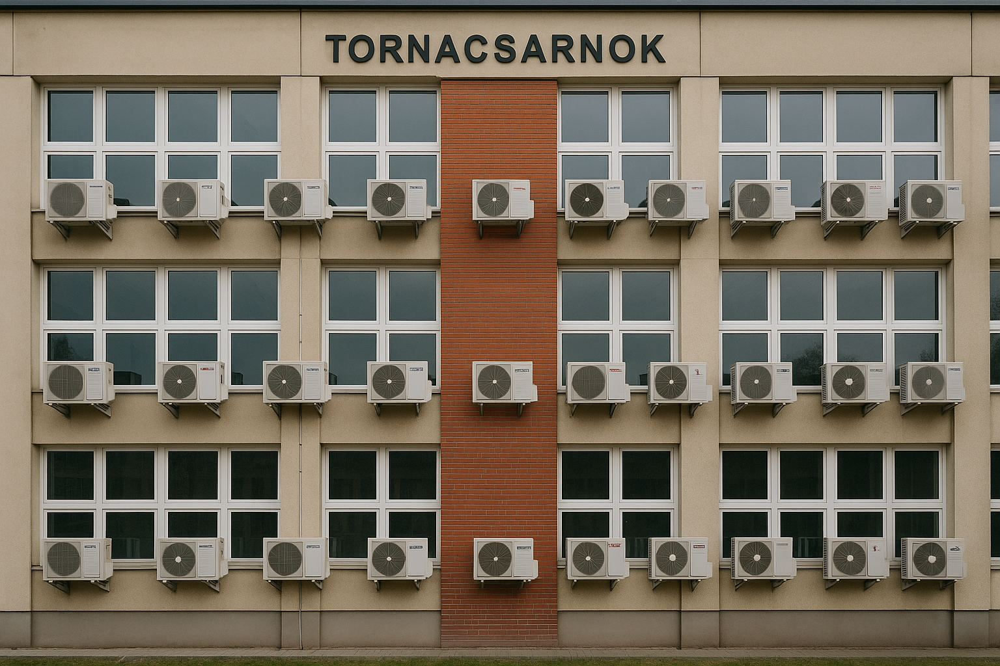
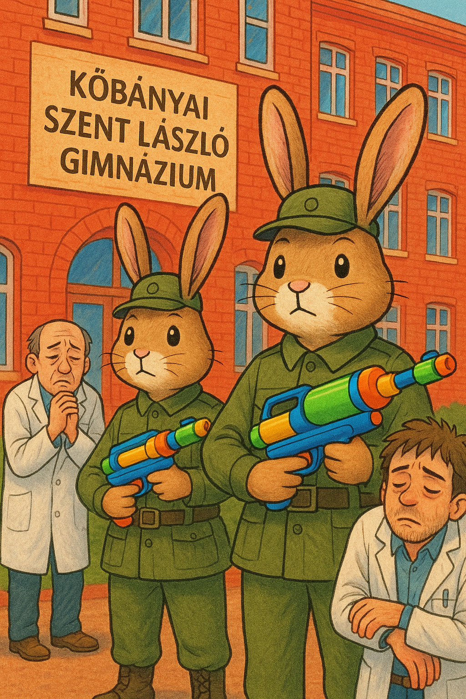

🧊 Légkodit kap a TESICSARNOK – vége a szaunázásnak!
Végre eljött a várva várt megváltás! A TESICSARNOKban hosszú évek óta tombolt a hőség, és a diákok úgy érezték magukat, mint egy igazi szaunában. A testnevelés órákon már nem a sporté volt a főszerep, hanem a túlélés.
„Olyan meleg volt, hogy alig bírtam levegőt venni, mintha a Szaharában edzenénk” – mesélte egy 11.-es diák. De a jó hír az, hogy mostantól ez megváltozik: a csarnokba légkondicionálót szerelnek!
A tanárok is örülnek a fejlesztésnek, bár egy-két vicces megjegyzést is hallani:
„Csak remélem, nem lesz túl hideg, különben kabátban kell majd bemelegíteni” – mondta egy testnevelő.
A légkondi beszerelése június közepén várható, szóval az utolsó órák már kellemes, hűs környezetben telhetnek. A diákok között nagy az izgalom, végre nem kell majd izzadva küzdeni a labdáért!
Kíváncsian várjuk, milyen lesz az új „hűsítő” hangulat a csarnokban – és persze reméljük, hogy a nyári meleg sem lesz többé rémálom.

🪑 ELLOPTÁK a székeket!!$!
Meglepő felfedezést tettek hétfő reggel a 3. emeleti tantermeknél: több szék nyomtalanul eltűnt! A diákok értetlenül álltak az eset előtt, és kénytelenek voltak az órát állva vagy a földön ülve végigcsinálni.
„Leültem volna, de csak a pad volt ott… a szék meg sehol” – panaszolta egy 9.-es tanuló.
A tanárok sem tudják, hogy mi történhetett. Egyesek szerint csak egy rossz tréfa, mások viszont már széklopó bandára gyanakodnak.
Az iskola igazgatósága belső vizsgálatot indított. Az egyik takarító néni szerint „a székek este még ott voltak… aztán reggelre füstté váltak”.
A diákok most arra várnak, hogy visszakerüljenek az ülőalkalmatosságok. Addig is: vigyázzatok a padokra – lehet, hogy ők a következők!

🐇 Nyulak TERROZÁLTÁK az E-seket
Ismeretlen eredetű nyúlinvázió történt péntek délután az iskolaudvaron, pontosan akkor, amikor az E osztály kint tartotta a tesi óráját. A tanulók szerint a nyuszik „nem voltak aranyosak, hanem szervezetten támadtak”.
„Először azt hittük, hogy valaki projektet forgat. Aztán az egyik nyúl nekiugrott egy tornazsáknak” – mesélte egy sokkos állapotban lévő 10.E-s.
A testnevelő tanár szerint a támadás nem volt véletlen: „Lehet, hogy valaki megetette őket a múlt héten, és most visszajöttek a többiekkel.”
Az incidens után az iskola ideiglenesen lezárta az udvar hátsó részét, és felvette a kapcsolatot egy közeli állatmenhellyel. A diákok jelenleg teremben tornáznak.
A nyomozás folyamatban van, de egy biztos: ezek a nyulak nem húsvétiak voltak.
